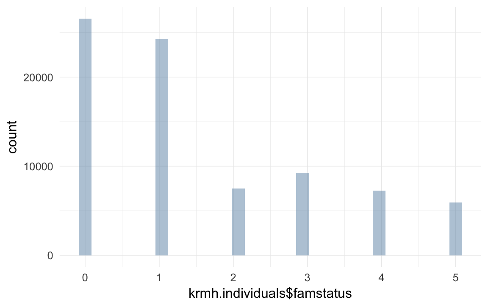
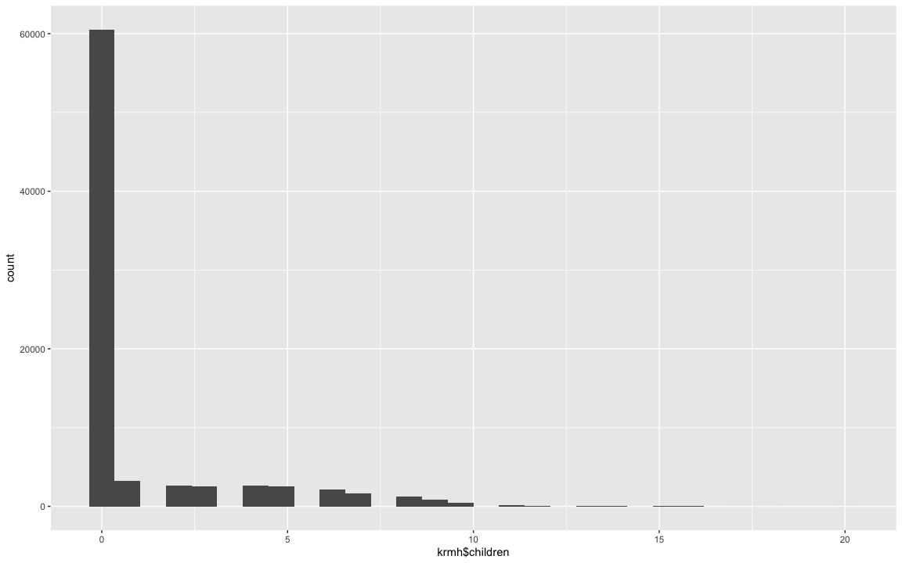

Krummhörn Data wrangling
description of data
The Krummhörn area in Eastern Frisia had around 15000 inhabitants in the early modern period. This population size was comparatively stable, because the settling of this relatively fertile marsh land concluded early.
This dataset resulted from a continuous research effort that started at the Anthropolical Institute at the University of Göttingen, moved to the University College London and is now at the centre for philosophy and scientific basics at the University of Gießen. The focus of the investigation lies at the intersection of genetic and cultural reproduction.
The data is based on the life histories contained in church registers. These were collected systematically and combined genealogically according to the method of family reconstitution. The main aim is the identification of persons and the reconstitution of their life histories. There are additional data on their social background, that could be gleaned from tax records and other social history sources.
The dataset was constructed according to the purposes of the biological inquiry, which results in the following aspects: Families that are mobile are only found in the file at one place, independent of the number of church communities that have records on them The basic unit of analyses is the core family. Their cycle begins typically with a wedding and ends in death or the children’s weddings.
The file is not final, it is continuously being corrected, amended and extended by including further church records.
Loading details
library(foreign); library(Hmisc); library(car); library(psych); library(QuantPsyc); library(formr); library(ggplot2); library(lubridate); library(stringr); library(reshape2); library(plyr);library(dplyr); library(knitr); library(data.table);
opts_chunk$set(cache=T,tidy=FALSE,autodep=TRUE,dev=c('png','pdf'),fig.width=12,fig.height=7.5,out.width='1440px',out.height='900px')
opts_knit$set(self.contained=F)
source("0__helpers.R")Transforming data
krmh.individuals = read.dta("data/kh_24Nov2014/famkind3.dta")
krmh.unions = read.dta("data/kh_24Nov2014/KHfam-4.dta")
krmh.individuals$idIndividu = krmh.individuals$idk
krmh.unions$idPere = krmh.unions$idm_new
krmh.unions$idMere = krmh.unions$idf_new
krmh.individuals = merge(krmh.individuals, krmh.unions[, c('doc','idPere','idMere')], by = "doc", all.x=T)
table(krmh.individuals$gebkk,exclude=NULL)| E | G | T | NA | |
|---|---|---|---|---|
| 66699 | 6158 | 2015 | 5936 | 0 |
table(krmh.individuals$famstatus,exclude=NULL)| 0 | 1 | 2 | 3 | 4 | 5 | NA |
|---|---|---|---|---|---|---|
| 26563 | 24290 | 7503 | 9261 | 7255 | 5936 | 0 |
krmh.individuals = data.table(krmh.individuals)
krmh.unions = data.table(krmh.unions)
miss_frac(krmh.individuals)0
# make male var.
props(~ krmh.individuals$sex)## krmh.individuals$sex
## M U W
## 0.50975 0.01077 0.47948class(krmh.individuals)data.table and data.frame
krmh.individuals[, male := Recode(sex,"'M'=1;'W'=0;else=NA")]
props(~ krmh.individuals$male)## krmh.individuals$male
## 0 1 <NA>
## 0.47948 0.50975 0.01077# famstatus variables contains the following info
# verheiratet: 1 (if famnrk empty)
# ledig (aber ueber 15): 2 (wenn ueber 5 aber famnrk empty)
# verstorben unter 15: 3
# Totgeburt: 4
qplot(krmh.individuals$famstatus)## stat_bin: binwidth defaulted to range/30. Use 'binwidth = x' to adjust this.
props(~ krmh.individuals$famstatus)## krmh.individuals$famstatus
## 0 1 2 3 4 5
## 0.32872 0.30059 0.09285 0.11460 0.08978 0.07346props(~ krmh.individuals$gebkk)## krmh.individuals$gebkk
## E G T
## 0.82540 0.07621 0.02494 0.07346unions
##### Get it into the form we're used to
length(unique(krmh.unions$doc)) # unique union identifier## [1] 35075### parent IDs
krmh.unions[, idParents := doc]
miss_frac(krmh.unions)0
length(intersect(krmh.unions$idPere, krmh.individuals$idIndividu))## [1] 12054length(intersect(krmh.unions$idMere, krmh.individuals$idIndividu))## [1] 13559length(intersect(krmh.unions$idMere, krmh.unions$idPere))## [1] 0length(intersect(krmh.unions$doc, krmh.individuals$doc))## [1] 28250krmh.u = as.data.frame(krmh.unions)
moms = krmh.u[!is.na(krmh.u$auswahl_id_f),c('idf_new',names(krmh.u)[names(krmh.u) %ends_with% "_id_f"])]
dads = krmh.u[!is.na(krmh.u$auswahl_id_m),c('idm_new',names(krmh.u)[names(krmh.u) %ends_with% "_id_m"])]
names(dads) = str_sub(names(dads),1,-6)
names(moms) = str_sub(names(moms),1,-6)
dads = dads[, names(moms)]
spouses = data.table(rbind(dads,moms))join files
krmh.individuals[, ehemges := as.numeric(Recode(ehemges,"' '=1"))]
krmh.unions[, ehemges := as.numeric(Recode(ehemges,"' '=1"))]
krmh.individuals[, ehefges := as.numeric(Recode(ehefges,"' '=1"))]
krmh.unions[, ehefges := as.numeric(Recode(ehefges,"' '=1"))]
qplot(data=melt(numcolwise(identity)(krmh.individuals)),value) + facet_wrap(~ variable,scales='free')## No id variables; using all as measure variables
## stat_bin: binwidth defaulted to range/30. Use 'binwidth = x' to adjust this.
## stat_bin: binwidth defaulted to range/30. Use 'binwidth = x' to adjust this.
## stat_bin: binwidth defaulted to range/30. Use 'binwidth = x' to adjust this.
## stat_bin: binwidth defaulted to range/30. Use 'binwidth = x' to adjust this.
## stat_bin: binwidth defaulted to range/30. Use 'binwidth = x' to adjust this.
## stat_bin: binwidth defaulted to range/30. Use 'binwidth = x' to adjust this.
## stat_bin: binwidth defaulted to range/30. Use 'binwidth = x' to adjust this.
## stat_bin: binwidth defaulted to range/30. Use 'binwidth = x' to adjust this.
## stat_bin: binwidth defaulted to range/30. Use 'binwidth = x' to adjust this.
## stat_bin: binwidth defaulted to range/30. Use 'binwidth = x' to adjust this.
## stat_bin: binwidth defaulted to range/30. Use 'binwidth = x' to adjust this.
## stat_bin: binwidth defaulted to range/30. Use 'binwidth = x' to adjust this.
## stat_bin: binwidth defaulted to range/30. Use 'binwidth = x' to adjust this.
## stat_bin: binwidth defaulted to range/30. Use 'binwidth = x' to adjust this.
## stat_bin: binwidth defaulted to range/30. Use 'binwidth = x' to adjust this.
## stat_bin: binwidth defaulted to range/30. Use 'binwidth = x' to adjust this.
## stat_bin: binwidth defaulted to range/30. Use 'binwidth = x' to adjust this.
## stat_bin: binwidth defaulted to range/30. Use 'binwidth = x' to adjust this.
## stat_bin: binwidth defaulted to range/30. Use 'binwidth = x' to adjust this.
## stat_bin: binwidth defaulted to range/30. Use 'binwidth = x' to adjust this.
## stat_bin: binwidth defaulted to range/30. Use 'binwidth = x' to adjust this.
## stat_bin: binwidth defaulted to range/30. Use 'binwidth = x' to adjust this.
## stat_bin: binwidth defaulted to range/30. Use 'binwidth = x' to adjust this.
## stat_bin: binwidth defaulted to range/30. Use 'binwidth = x' to adjust this.
## stat_bin: binwidth defaulted to range/30. Use 'binwidth = x' to adjust this.
## stat_bin: binwidth defaulted to range/30. Use 'binwidth = x' to adjust this.
## stat_bin: binwidth defaulted to range/30. Use 'binwidth = x' to adjust this.
## stat_bin: binwidth defaulted to range/30. Use 'binwidth = x' to adjust this.
## stat_bin: binwidth defaulted to range/30. Use 'binwidth = x' to adjust this.
## stat_bin: binwidth defaulted to range/30. Use 'binwidth = x' to adjust this.
## stat_bin: binwidth defaulted to range/30. Use 'binwidth = x' to adjust this.
## stat_bin: binwidth defaulted to range/30. Use 'binwidth = x' to adjust this.
## stat_bin: binwidth defaulted to range/30. Use 'binwidth = x' to adjust this.
## stat_bin: binwidth defaulted to range/30. Use 'binwidth = x' to adjust this.
## stat_bin: binwidth defaulted to range/30. Use 'binwidth = x' to adjust this.
## stat_bin: binwidth defaulted to range/30. Use 'binwidth = x' to adjust this.
## stat_bin: binwidth defaulted to range/30. Use 'binwidth = x' to adjust this.
## stat_bin: binwidth defaulted to range/30. Use 'binwidth = x' to adjust this.
## stat_bin: binwidth defaulted to range/30. Use 'binwidth = x' to adjust this.
## stat_bin: binwidth defaulted to range/30. Use 'binwidth = x' to adjust this.
## stat_bin: binwidth defaulted to range/30. Use 'binwidth = x' to adjust this.
## stat_bin: binwidth defaulted to range/30. Use 'binwidth = x' to adjust this.
## stat_bin: binwidth defaulted to range/30. Use 'binwidth = x' to adjust this.
## stat_bin: binwidth defaulted to range/30. Use 'binwidth = x' to adjust this.
## stat_bin: binwidth defaulted to range/30. Use 'binwidth = x' to adjust this.
## stat_bin: binwidth defaulted to range/30. Use 'binwidth = x' to adjust this.
## stat_bin: binwidth defaulted to range/30. Use 'binwidth = x' to adjust this.
## stat_bin: binwidth defaulted to range/30. Use 'binwidth = x' to adjust this.
## stat_bin: binwidth defaulted to range/30. Use 'binwidth = x' to adjust this.
## stat_bin: binwidth defaulted to range/30. Use 'binwidth = x' to adjust this.
## stat_bin: binwidth defaulted to range/30. Use 'binwidth = x' to adjust this.
## stat_bin: binwidth defaulted to range/30. Use 'binwidth = x' to adjust this.
## stat_bin: binwidth defaulted to range/30. Use 'binwidth = x' to adjust this.
## stat_bin: binwidth defaulted to range/30. Use 'binwidth = x' to adjust this.
## stat_bin: binwidth defaulted to range/30. Use 'binwidth = x' to adjust this.## Warning: position_stack requires constant width: output may be incorrect## Warning: position_stack requires constant width: output may be incorrect## Warning: position_stack requires constant width: output may be incorrect## Warning: position_stack requires constant width: output may be incorrect
# qplot(data=melt(catcolwise(identity)(krmh.individuals)),value) + facet_wrap(~ variable,scales='free')
spouses[,idIndividu:=id]
spouses$id=NULL## Warning in alloc.col(x): Attempt to reduce allocation from 111 to 110
## ignored. Can only increase allocation via shallow copy.(uniq_unions = setdiff(names(spouses), names(krmh.individuals)))Nbirths, NinfantD, NchildD, NadultD, ageFfirstbirth, ageFlastbirth, ageMfirstbirth, ageMlastbirth, ageHfirst, ageHlast and auswahl
krmh = merge(krmh.individuals, spouses[, list(idIndividu, Nbirths, NinfantD, NchildD, NadultD, ageFfirstbirth, ageFlastbirth, ageMfirstbirth, ageMlastbirth, ageHfirst, ageHlast)], by = "idIndividu", all.x =T)
table(krmh$Nbirths)| 1 | 2 | 3 | 4 | 5 | 6 | 7 | 8 | 9 | 10 | 11 | 12 | 13 | 14 | 15 | 16 | 17 | 18 | 20 |
|---|---|---|---|---|---|---|---|---|---|---|---|---|---|---|---|---|---|---|
| 3248 | 2613 | 2512 | 2595 | 2535 | 2186 | 1695 | 1252 | 806 | 436 | 189 | 103 | 51 | 34 | 12 | 10 | 2 | 4 | 1 |
miss_frac(krmh)0
count kids
krmh[,idParents := doc]
count_spouses = function(df, df2, what, wt_var) {
df = data.frame(df)
df2 = data.frame(df2)
counted.husband = dcast(data= df2[,c('idPere',wt_var)],formula = idPere ~ .,fun.aggregate = sum, na.rm=T, value.var = wt_var)
counted.wive = dcast(data= df2[,c('idMere',wt_var)],formula = idMere ~ .,fun.aggregate = sum, na.rm=T, value.var = wt_var)
names(counted.husband) = names(counted.wive) = c('idIndividu',what)
counted = rbind(counted.husband,counted.wive)
df = merge(df,counted,by='idIndividu',all.x=T)
df[,what] = Recode(df[,what],'NA=0')
data.table(df)
}
krmh$born = 1; krmh.unions$born = 1
# spouses[spouses$idIndividu==1,]
# krmh.unions[idPere==2,]
# krmh.individuals[idIndividu==2,]
krmh = count_spouses(krmh,krmh.unions, 'spouses', "born")
# qplot(krmh$spouses,ifelse(krmh$male==T, krmh$ehemges,krmh$ehefges), geom = "jitter")
# xtabs(~ krmh$spouses + ifelse(krmh$male==T, krmh$ehemges,krmh$ehefges), exclude =NULL, na.action=na.pass)
krmh$survive1d = ifelse(krmh$ageKtod_days > 1, 1, 0)
krmh$survive1m = ifelse(krmh$ageKtod_days > 28, 1, 0)
krmh$dead1m = ifelse(krmh$ageKtod_days > 28, 0, 1)
krmh$dead1y = ifelse(krmh$ageK1 >= 1, 0, 1)
krmh$dead5y = ifelse(krmh$ageK15 > 5, 0, 1)
krmh$deadR = ifelse(krmh$ageK15 >= 15, 0, 1)
krmh$survive5y = ifelse(krmh$ageK15 > 5, 1, 0)
krmh$survive1y = ifelse(krmh$ageK1 >= 1, 1, 0)
krmh$surviveR = ifelse(krmh$ageK15 >= 15, 1, 0)
krmh$born =1
krmh[, not_stillborn := ifelse(famstatus != 4,1,0)]
krmh[, survive1d := ifelse(famstatus != 4,1,0)] # small discrepancy of 7 with gebkk, but dead the first day, maybe not stillborn
# krmh[, survive1d := ifelse(gebkk!='Todgeburt' | is.na(gebkk),1, 0) ] # age is always missing in these ~1600 cases
props(~ krmh$survive1d)## krmh$survive1d
## 0 1
## 0.08978 0.91022xtabs(data=krmh, ~ spouses + famstatus)## famstatus
## spouses 0 1 2 3 4 5
## 0 26563 3 7503 9257 7255 4614
## 1 0 21407 0 4 0 1092
## 2 0 2613 0 0 0 198
## 3 0 247 0 0 0 27
## 4 0 19 0 0 0 5
## 5 0 1 0 0 0 0props(~ krmh$famstatus)## krmh$famstatus
## 0 1 2 3 4 5
## 0.32872 0.30059 0.09285 0.11460 0.08978 0.07346krmh[survive1d == 0, age := 0 ] # i dont want age to be missing here
krmh[survive1d == 0, age.days := 0 ] # i dont want age to be missing here
krmh[, ever_married := ifelse(famstatus==1,1,0) ] # famstatus does not map directly
xtabs(data=krmh, ~ spouses + ever_married) # big discrepancy## ever_married
## spouses 0 1
## 0 55192 3
## 1 1096 21407
## 2 198 2613
## 3 27 247
## 4 5 19
## 5 0 1krmh[, ever_married := ifelse(spouses>0,1,0) ]
xtabs(data=krmh, ~ surviveR + ever_married)## ever_married
## surviveR 0 1
## 0 15454 0
## 1 14609 24798# krmh[ever_married == TRUE,surviveR := 1] # dead kids can't marry
props(~ krmh$surviveR)## krmh$surviveR
## 0 1 <NA>
## 0.1912 0.4877 0.3211qplot(data=krmh, x= age) + facet_wrap (~ surviveR)## stat_bin: binwidth defaulted to range/30. Use 'binwidth = x' to adjust this.
## stat_bin: binwidth defaulted to range/30. Use 'binwidth = x' to adjust this.
## stat_bin: binwidth defaulted to range/30. Use 'binwidth = x' to adjust this.krmh[,paternalage := ageMgebK/10]
krmh[paternalage < 1 ,paternalage := NA]
krmh[,maternalage := ageFgebK/10]
qplot(maternalage,paternalage,data=krmh,geom="jitter",alpha=I(0.1))## Warning: Removed 54034 rows containing missing values (geom_point).
cor.test(krmh$maternalage,krmh$paternalage)| Test statistic | df | P value | Alternative hypothesis |
|---|---|---|---|
| 131.3 | 26772 | 0 * * * | two.sided |
krmh.unions = krmh.unions[order(krmh.unions$idPere,krmh.unions$dat4),]
krmh.unions$marriage.order.Father = ave(rep(NA, nrow(krmh.unions)), krmh.unions$idPere, FUN = seq_along)
krmh.unions = krmh.unions[order(krmh.unions$idMere,krmh.unions$dat4),]
krmh.unions$marriage.order.Mother = ave(rep(NA, nrow(krmh.unions)), krmh.unions$idMere, FUN = seq_along)
krmh = merge(krmh, krmh.unions[,list(idParents,marriage.order.Mother,marriage.order.Father,dat4,dat8),],by="idParents",all.x=T)
krmh$first.marriage = (krmh$marriage.order.Mother + krmh$marriage.order.Father) == 2
table(krmh$first.marriage,exclude=NULL)| FALSE | TRUE | NA |
|---|---|---|
| 9867 | 70941 | 0 |
qplot(krmh.unions$marriage.order.Mother)## stat_bin: binwidth defaulted to range/30. Use 'binwidth = x' to adjust this.
Known families
We apply the following criteria to consider a family “known”, which means we can make some further assumptions. If we know the bride’s and groom’s end of marriage, that is we have upper bound death dates (todk8) for at least one spouse and a lower bound death date for the other spouse that exceeds this date, we know that this family spent its time in the Krummhörn. Thus we can conclude that children who have missing death dates did not die, they emigrated (otherwise we’d have dates because the family is on-the-record).
# we consider a family "known" if we know that one spouse survived the other and we have the marriage date. if we have missing death dates for such children, we can assume that they emigrated (thus made 15), we'd know if they'd died in the KH
krmh$known_family = krmh$ehebekannt
nrow(krmh[is.na(survive1m) & known_family, ])## [1] 18141nrow(krmh[is.na(survive1y) & known_family, ])## [1] 2137nrow(krmh[is.na(surviveR) & known_family, ])## [1] 2137krmh[is.na(survive1m) & known_family, survive1m := 1 ]
krmh[is.na(survive1y) & known_family, survive1y := 1 ]
krmh[is.na(surviveR) & known_family, surviveR := 1 ]
props(~ krmh$known_family)## krmh$known_family
## 1 <NA>
## 0.408 0.592krmh = count_and_merge(krmh, 'children', wt_var = "born")
xtabs(data=krmh, ~ Nbirths + children,na.action = na.pass,exclude=NULL)## children
## Nbirths 0 1 2 3 4 5 6 7 8 9 10
## 1 0 3248 0 0 0 0 0 0 0 0 0
## 2 0 0 2613 0 0 0 0 0 0 0 0
## 3 0 0 0 2512 0 0 0 0 0 0 0
## 4 0 0 0 0 2595 0 0 0 0 0 0
## 5 0 0 0 0 0 2535 0 0 0 0 0
## 6 0 0 0 0 0 0 2186 0 0 0 0
## 7 0 0 0 0 0 0 0 1695 0 0 0
## 8 0 0 0 0 0 0 0 0 1252 0 0
## 9 0 0 0 0 0 0 0 0 0 806 0
## 10 0 0 0 0 0 0 0 0 0 0 436
## 11 0 0 0 0 0 0 0 0 0 0 0
## 12 0 0 0 0 0 0 0 0 0 0 0
## 13 0 0 0 0 0 0 0 0 0 0 0
## 14 0 0 0 0 0 0 0 0 0 0 0
## 15 0 0 0 0 0 0 0 0 0 0 0
## 16 0 0 0 0 0 0 0 0 0 0 0
## 17 0 0 0 0 0 0 0 0 0 0 0
## 18 0 0 0 0 0 0 0 0 0 0 0
## 20 0 0 0 0 0 0 0 0 0 0 0
## <NA> 60524 0 0 0 0 0 0 0 0 0 0
## children
## Nbirths 11 12 13 14 15 16 17 18 20
## 1 0 0 0 0 0 0 0 0 0
## 2 0 0 0 0 0 0 0 0 0
## 3 0 0 0 0 0 0 0 0 0
## 4 0 0 0 0 0 0 0 0 0
## 5 0 0 0 0 0 0 0 0 0
## 6 0 0 0 0 0 0 0 0 0
## 7 0 0 0 0 0 0 0 0 0
## 8 0 0 0 0 0 0 0 0 0
## 9 0 0 0 0 0 0 0 0 0
## 10 0 0 0 0 0 0 0 0 0
## 11 189 0 0 0 0 0 0 0 0
## 12 0 103 0 0 0 0 0 0 0
## 13 0 0 51 0 0 0 0 0 0
## 14 0 0 0 34 0 0 0 0 0
## 15 0 0 0 0 12 0 0 0 0
## 16 0 0 0 0 0 10 0 0 0
## 17 0 0 0 0 0 0 2 0 0
## 18 0 0 0 0 0 0 0 4 0
## 20 0 0 0 0 0 0 0 0 1
## <NA> 0 0 0 0 0 0 0 0 0krmh$children.per.spouse = krmh$children/krmh$spouses
krmh$children.per.spouse[which(krmh$spouses==0)] = NA
qplot(krmh$children.per.spouse)## stat_bin: binwidth defaulted to range/30. Use 'binwidth = x' to adjust this.qplot(krmh$children)## stat_bin: binwidth defaulted to range/30. Use 'binwidth = x' to adjust this.# well we know that people who reproduced or married usually made 15
changeNAto1 = function(x) { colwise(function(x) { ifelse(is.na(x), 1, x)})(x) }
krmh[children>0 | spouses>0, surviveR := ifelse(is.na(surviveR), 1, surviveR)]
krmh[children>0 | spouses>0, survive1d := ifelse(is.na(survive1d), 1, survive1d)]
krmh[children>0 | spouses>0, survive1y := ifelse(is.na(survive1y), 1, survive1y)]
krmh = count_and_merge(krmh, 'children.surviving1d', wt_var = 'survive1d')
krmh = count_and_merge(krmh, 'children.surviving1m', wt_var = 'survive1m')
krmh = count_and_merge(krmh, 'children.surviving1y', wt_var = 'survive1y')
krmh = count_and_merge(krmh, 'children.surviving5y', wt_var = 'survive5y')
krmh = count_and_merge(krmh, 'children.survivingR', wt_var = 'surviveR')
krmh = count_and_merge(krmh, 'children.dead1m', wt_var = 'dead1m')
krmh = count_and_merge(krmh, 'children.dead1y', wt_var = 'dead1y')
table(krmh$children.dead1y== krmh$NinfantD)| FALSE | TRUE |
|---|---|
| 263 | 20021 |
# xtabs(~ krmh$children.dead1y + krmh$NinfantD, exclude = NULL, na.action = na.pass)
krmh = count_and_merge(krmh, 'children.dead5y', wt_var = 'dead5y')
krmh = count_and_merge(krmh, 'children.deadR', wt_var = 'deadR')
table(krmh$children.deadR - krmh$children.dead1y == krmh$NchildD)| TRUE |
|---|
| 20284 |
xtabs(~ I(krmh$children.deadR - krmh$children.dead1y) + krmh$NchildD, exclude = NULL, na.action = na.pass)## krmh$NchildD
## I(krmh$children.deadR - krmh$children.dead1y) 0 1 2 3
## 0 12880 0 0 0
## 1 0 5046 0 0
## 2 0 0 1634 0
## 3 0 0 0 536
## 4 0 0 0 0
## 5 0 0 0 0
## 6 0 0 0 0
## 7 0 0 0 0
## krmh$NchildD
## I(krmh$children.deadR - krmh$children.dead1y) 4 5 6 7
## 0 0 0 0 0
## 1 0 0 0 0
## 2 0 0 0 0
## 3 0 0 0 0
## 4 148 0 0 0
## 5 0 33 0 0
## 6 0 0 3 0
## 7 0 0 0 4
## krmh$NchildD
## I(krmh$children.deadR - krmh$children.dead1y) <NA>
## 0 60524
## 1 0
## 2 0
## 3 0
## 4 0
## 5 0
## 6 0
## 7 0changeNAto0 = function(x) { ifelse(is.na(x), 0, x) }
krmh$children.unknown_fate = krmh$Nbirths - krmh$NchildD - krmh$NinfantD - krmh$NadultD
qplot(krmh$children.unknown_fate)## stat_bin: binwidth defaulted to range/30. Use 'binwidth = x' to adjust this.table(krmh$children.unknown_fate)| 0 | 1 | 2 | 3 | 4 | 5 | 6 | 7 | 8 | 9 | 10 | 11 | 12 | 13 | 16 |
|---|---|---|---|---|---|---|---|---|---|---|---|---|---|---|
| 10534 | 3768 | 2204 | 1471 | 1075 | 608 | 330 | 186 | 49 | 37 | 12 | 6 | 2 | 1 | 1 |
table(krmh$NchildD)| 0 | 1 | 2 | 3 | 4 | 5 | 6 | 7 |
|---|---|---|---|---|---|---|---|
| 12880 | 5046 | 1634 | 536 | 148 | 33 | 3 | 4 |
krmh = count_and_merge(krmh, 'children.spouses', wt_var = 'spouses')
krmh = count_and_merge(krmh, 'grandchildren.per.spouse', wt_var = 'children.per.spouse')
krmh = count_and_merge(krmh, 'grandchildren',wt_var='children')
krmh = count_and_merge(krmh, 'grandchildren.surviving1d', wt_var = 'children.surviving1d')
krmh = count_and_merge(krmh, 'grandchildren.surviving1m', wt_var = 'children.surviving1m')
krmh = count_and_merge(krmh, 'grandchildren.surviving1y', wt_var = 'children.surviving1y')
krmh = count_and_merge(krmh, 'grandchildren.survivingR', wt_var = 'children.survivingR')
krmh = count_and_merge(krmh, 'grandchildren.dead1m', wt_var = 'children.dead1m')
props(~ krmh$spouses)## krmh$spouses
## 0 1 2 3 4 5
## 0.68303881 0.27847490 0.03478616 0.00339075 0.00029700 0.00001238xtabs(~ (grandchildren>0) +(children>0) + (spouses>0) + surviveR,data=krmh,exclude=NULL, na.action= na.pass)## , , spouses > 0 = FALSE, surviveR = 0
##
## children > 0
## grandchildren > 0 FALSE TRUE
## FALSE 15454 0
## TRUE 0 0
##
## , , spouses > 0 = TRUE, surviveR = 0
##
## children > 0
## grandchildren > 0 FALSE TRUE
## FALSE 0 0
## TRUE 0 0
##
## , , spouses > 0 = FALSE, surviveR = 1
##
## children > 0
## grandchildren > 0 FALSE TRUE
## FALSE 16423 0
## TRUE 0 0
##
## , , spouses > 0 = TRUE, surviveR = 1
##
## children > 0
## grandchildren > 0 FALSE TRUE
## FALSE 5329 9607
## TRUE 0 10677
##
## , , spouses > 0 = FALSE, surviveR = NA
##
## children > 0
## grandchildren > 0 FALSE TRUE
## FALSE 23318 0
## TRUE 0 0
##
## , , spouses > 0 = TRUE, surviveR = NA
##
## children > 0
## grandchildren > 0 FALSE TRUE
## FALSE 0 0
## TRUE 0 0qplot(krmh$children)## stat_bin: binwidth defaulted to range/30. Use 'binwidth = x' to adjust this.
krmh[, age:=ageKtod/10]
qplot(krmh[which(krmh$age > 1.5),]$children )## stat_bin: binwidth defaulted to range/30. Use 'binwidth = x' to adjust this.qplot(krmh$grandchildren)## stat_bin: binwidth defaulted to range/30. Use 'binwidth = x' to adjust this.qplot(krmh[which(krmh$age > 1.5),]$grandchildren )## stat_bin: binwidth defaulted to range/30. Use 'binwidth = x' to adjust this.qplot(krmh$spouses)## stat_bin: binwidth defaulted to range/30. Use 'binwidth = x' to adjust this.miss_frac(krmh)0
pre-calculate some predictors
krmh = krmh[order(krmh$idPere,krmh$gebk4), ]
krmh <- transform(krmh, birthorder = ave(rep(NA, nrow(krmh)), krmh$idPere, FUN = seq_along)) # old trick to get birth order, don't know what this does to those with missings for father though
krmh$birthorder.mean = ave(krmh$birthorder,krmh$idPere,FUN= function(x) { mean(x,na.rm=T) } )
krmh$birthorder.diff = krmh$birthorder - krmh$birthorder.mean
qplot(krmh$birthorder,binwidth=1)
krmh[, byear := year(gebk4)]
transform(krmh[1:40,list(idParents,byear,birthorder,surviveR)], min15.birthorder = ave(surviveR, idParents, FUN =function(x) { x[is.na(x)] = 0
cumsum(x)
} )) # NAs propagate problematically...
krmh <- transform(krmh, min15.birthorder = ave(surviveR, idPere, FUN =function(x) { x[is.na(x)] = 0
cumsum(x)
} ))
xtabs(data=krmh, ~is.na(birthorder) + is.na(min15.birthorder))## is.na(min15.birthorder)
## is.na(birthorder) FALSE
## FALSE 80808table(krmh$min15.birthorder,exclude=NULL)| 0 | 1 | 2 | 3 | 4 | 5 | 6 | 7 | 8 | 9 | 10 | 11 | 12 | 13 | 14 | NA |
|---|---|---|---|---|---|---|---|---|---|---|---|---|---|---|---|
| 23860 | 24070 | 12100 | 8144 | 5449 | 3359 | 1963 | 1031 | 486 | 198 | 77 | 40 | 17 | 13 | 1 | 0 |
krmh$min15.birthorder.mean = ave(krmh$min15.birthorder,krmh$idParents,FUN= function(x) { mean(x,na.rm=T) } )
krmh$min15.birthorder.diff = krmh$min15.birthorder - krmh$min15.birthorder.mean
krmh[, nr.siblings := ave(born,doc,FUN= function(x) { sum(x,na.rm=T) } ) - 1]
qplot(krmh$nr.siblings,binwidth=1)
krmh$nr.dead.siblings1m = ave(krmh$dead1m,krmh$idParents,FUN= function(x) { sum(x,na.rm=T) } ) - krmh$dead1m # don't count self! dont't control for outcome
qplot(krmh$nr.dead.siblings1m,binwidth=1)
krmh$infant.death.cluster = krmh$nr.dead.siblings1m/krmh$nr.siblings
qplot(krmh$infant.death.cluster)## stat_bin: binwidth defaulted to range/30. Use 'binwidth = x' to adjust this.
qplot(krmh[which(krmh$nr.siblings>1),]$infant.death.cluster)## stat_bin: binwidth defaulted to range/30. Use 'binwidth = x' to adjust this.
lag.0 = function(x) {
if(length(x)==1) 0
else c(0,x[ 1:(length(x)-1)])
}
inv.lag.0 = function(x) {
if(length(x)==1) 0
else c(x[ 2:length(x)],0)
}
krmh = transform(krmh, older.sib.made.15y = ave(surviveR, idPere, FUN = lag.0))
krmh = transform(krmh, younger.sib.made.15y = ave(surviveR, idPere, FUN = inv.lag.0))Get grandparents
grandparents = krmh[, list(idIndividu,idPere,idMere, paternalage, maternalage)]
names(grandparents) = c('idMere', 'idMaternalGrandfather', 'idMaternalGrandmother', 'maternal.grandpaternalage', 'maternal.grandmaternalage')
krmh = merge(krmh, grandparents, by = "idMere", all.x =T)
names(grandparents) = c('idPere', 'idPaternalGrandfather', 'idPaternalGrandmother', 'paternal.grandpaternalage', 'paternal.grandmaternalage')
krmh = merge(krmh, grandparents, by = "idPere", all.x =T)Cohorts and death rates as moderators
epidemics: typhoid 1687 smallpox 1702-3, 1733
krmh[,bdate.Father := gebm4]
krmh$father.birth.decade = round(year(krmh$bdate.Father)/10)*10
table(krmh$father.birth.decade,exclude=NULL)| 1540 | 1570 | 1580 | 1600 | 1610 | 1620 | 1630 | 1640 | 1650 | 1660 | 1670 | 1680 | 1690 | 1700 | 1710 | 1720 | 1730 | 1740 | 1750 | 1760 | 1770 | 1780 | 1790 | 1800 | 1810 | 1820 | 1830 | 1840 | 1850 | 1860 | 1870 | 1880 | 1890 | NA |
|---|---|---|---|---|---|---|---|---|---|---|---|---|---|---|---|---|---|---|---|---|---|---|---|---|---|---|---|---|---|---|---|---|---|
| 2 | 2 | 2 | 2 | 1 | 22 | 77 | 112 | 95 | 166 | 329 | 310 | 634 | 1632 | 1889 | 2962 | 2557 | 4105 | 2723 | 3799 | 3341 | 3592 | 3310 | 4702 | 3428 | 4764 | 3253 | 2605 | 821 | 640 | 528 | 209 | 2 | 28192 |
# rule: at least 1500 obs per group, then smallest decade range possible
krmh$paternal.cohort = krmh$father.birth.decade
krmh$birth.decade = round(year(krmh$bdate)/10)*10
table(krmh$birth.decade,exclude=NULL)| 1540 | 1570 | 1580 | 1600 | 1610 | 1620 | 1630 | 1640 | 1650 | 1660 | 1670 | 1680 | 1690 | 1700 | 1710 | 1720 | 1730 | 1740 | 1750 | 1760 | 1770 | 1780 | 1790 | 1800 | 1810 | 1820 | 1830 | 1840 | 1850 | 1860 | 1870 | 1880 | 1890 | NA |
|---|---|---|---|---|---|---|---|---|---|---|---|---|---|---|---|---|---|---|---|---|---|---|---|---|---|---|---|---|---|---|---|---|---|
| 2 | 2 | 2 | 2 | 1 | 22 | 77 | 112 | 95 | 166 | 329 | 310 | 634 | 1632 | 1889 | 2962 | 2557 | 4105 | 2723 | 3799 | 3341 | 3592 | 3310 | 4702 | 3428 | 4764 | 3253 | 2605 | 821 | 640 | 528 | 209 | 2 | 28192 |
krmh$own.cohort = krmh$birth.decade
births = na.omit( ddply(krmh, .(byear), summarise, births = length(idIndividu)) )
krmh[, ddate := todk4]
krmh$death.decade = round(year(krmh$ddate)/10)*10
krmh$dyear = year(krmh$ddate)
deaths = na.omit( ddply(krmh, .(dyear), summarise, deaths = length(idIndividu)) )
qplot(dyear, deaths, data= deaths,geom="line") + ylab("Deaths") + xlab("Death year")
birthdeaths = merge(births,deaths,by.x="byear",by.y="dyear",all=T)
birthdeaths$deaths.per.birth = birthdeaths$deaths / birthdeaths$births
qplot(byear, deaths.per.birth, data= birthdeaths,geom="line") + ylab("Number of deaths per birth") + xlab("Year")## Warning: Removed 64 rows containing missing values (geom_path).
krmh = merge(krmh, birthdeaths, by="byear", all.x=T)
library(zoo)
infant.mortality = na.omit( ddply(krmh, .(byear), summarise,
infant.mortality = sum(!survive1y, na.rm=T) / length(idIndividu) * 1000,
neonatal.deaths = sum(!survive1m, na.rm=T) / length(idIndividu) * 1000,
perinatal.deaths = sum(!survive1d, na.rm=T) / length(idIndividu) * 1000,
postneonatal.deaths = sum(survive1m & !survive1y, na.rm=T) / length(idIndividu) * 1000
))
infant.mortality$infant.mortality = rollmean(infant.mortality$infant.mortality, k=3, na.pad = T)
infant.mortality$neonatal.deaths = rollmean(infant.mortality$neonatal.deaths, k=3, na.pad = T)
infant.mortality$perinatal.deaths = rollmean(infant.mortality$perinatal.deaths, k=3, na.pad = T)
infant.mortality$postneonatal.deaths = rollmean(infant.mortality$postneonatal.deaths, k=3, na.pad = T)
qplot(data=melt(infant.mortality,id.vars='byear'), byear, value, geom='line') + facet_wrap(~ variable)## Warning: Removed 2 rows containing missing values (geom_path).## Warning: Removed 2 rows containing missing values (geom_path).## Warning: Removed 2 rows containing missing values (geom_path).## Warning: Removed 2 rows containing missing values (geom_path).
krmh = merge(krmh, infant.mortality, by="byear", all.x=T)Make pedigree, calculate inbreeding
# pedigree = krmh[, list(idIndividu, idMere, idPere)]
# setnames(pedigree, c("idIndividu", "idMere", "idPere"), c("animal", "dam", "sire"))
# pedigree_ordered = pedigree::orderPed(pedigree)
#
# krmh = krmh[! idIndividu %in% pedigree[ which(pedigree_ordered == -1), animal],]
# library(pedigreemm)
# pedigree = editPed(sire = krmh$idPere, dam = krmh$idMere, label = krmh$idIndividu)
# names(pedigree) = c("animal","sire","dam")
# krmh_pedigree = pedigree[,c("animal","dam", "sire")]
# krmh_pedigree$inbreeding = pedigree::calcInbreeding(krmh_pedigree)
# qplot(krmh_pedigree$inbreeding)+xlim(c(0.001,0.3))
# table(round(krmh_pedigree$inbreeding,2))
# krmh$animal = as.character(krmh$idIndividu)
# krmh_pedigree$animal = as.character(krmh_pedigree$animal)
# krmh = merge(krmh, krmh_pedigree[,c('animal','inbreeding')], by = 'animal')high-level predictors
krmh$born = NULL # was just an aid## Warning in alloc.col(x): Attempt to reduce allocation from 314 to 313
## ignored. Can only increase allocation via shallow copy.library(dplyr)
krmh = data.table(krmh)
krmh[, bdate := gebk4]
krmh[, ddate.Mother := todf4]
krmh[, ddate.Father := todm4]krmh$byear.years = year(krmh$bdate)
krmh$dyear.years = year(krmh$ddate)# krmh[, mother_survived_1y := (bdate + dyears(1)) < ddate.Mother ]
# krmh[, mother_survived_5y := (bdate + dyears(5)) < ddate.Mother ]krmh = krmh %>%
group_by(idParents) %>%
mutate(
younger_sibs_ad_5y = younger_sibs_alive_and_dependent(survive5y=survive5y, byear=byear.years, dyear=dyear.years) ,
older_sibs_ad_5y = older_sibs_alive_and_dependent(survive5y=survive5y, byear=byear.years, dyear=dyear.years),
dependent_sibs_f5y = dependent_sibs_f5y(survive1y=survive1y, byear=byear, dyear=dyear)
) %>% data.table()miss_frac(krmh)0
krmh$ddate = as.Date(krmh$ddate)
krmh$ddate.Mother = as.Date(krmh$ddate.Mother)
krmh$ddate.Father = as.Date(krmh$ddate.Father)
krmh$bdate = as.Date(krmh$bdate)
krmh$bdate.Mother = krmh$gebf4
krmh$bdate.Mother = as.Date(krmh$bdate.Mother)
krmh$bdate.Father = as.Date(krmh$bdate.Father)
krmh$paternal_alive = as.numeric(krmh$ddate.Father-krmh$bdate)/365
qplot(krmh$paternal_alive)## stat_bin: binwidth defaulted to range/30. Use 'binwidth = x' to adjust this.
krmh$paternalloss = ifelse(as.POSIXct(krmh$bdate) + dyears(5) > as.POSIXct(krmh$ddate.Father),1,0)
krmh$paternalloss_by_35 = as.POSIXct(krmh$bdate) + dyears(35) > as.POSIXct(krmh$ddate.Father)
krmh$maternalloss = ifelse(as.POSIXct(krmh$bdate) + dyears(5) > as.POSIXct(krmh$ddate.Mother),1,0)
krmh$maternalloss_by_35 = as.POSIXct(krmh$bdate) + dyears(35) > as.POSIXct(krmh$ddate.Mother)
krmh$parentalloss_might_be_disease = FALSE
krmh[as.POSIXct(bdate) + ddays(30) > as.POSIXct(ddate.Father),]$parentalloss_might_be_disease = TRUE
krmh[as.POSIXct(bdate) + ddays(30) > as.POSIXct(ddate.Mother),]$parentalloss_might_be_disease = TRUEkrmh = data.table(krmh)
krmh$landownership = Recode(krmh$grasen,"0:1='0 landless';1:25='1-25 grasen';25:140='25-140 grasen';140:hi='140+ grasen'")
krmh$landless = Recode(krmh$grasen,"0:1=T;1:hi=F")
props(~ krmh$landownership)## krmh$landownership
## 0 landless 1-25 grasen 140+ grasen 25-140 grasen <NA>
## 0.14782 0.06791 0.01771 0.06346 0.70310props(~ krmh$landless)## krmh$landless
## 0 1 <NA>
## 0.1491 0.1478 0.7031krmh[, ageK5 := ifelse(age > 5, 5, age)]
krmh[krmh$dat8_fam1< krmh$bdate, dat8_fam1:=NA]
krmh[, paternalloss_m := (ifelse(bdate + days(ifelse(is.na(ageK5), 5, round(ageK5*365))) <= ddate.Father,
ifelse(is.na(dat8_fam1) | ddate.Father < dat8_fam1, 'dead_b_m', 'dead_a_m'), 'dead_5y'))]
krmh[, maternalloss_m := (ifelse(bdate + days(ifelse(is.na(ageK5), 5, round(ageK5*365))) <= ddate.Mother,
ifelse(is.na(dat8_fam1) | ddate.Mother < dat8_fam1, 'dead_b_m', 'dead_a_m'), 'dead_5y'))]
krmh[, paternalloss_k1 := ifelse(bdate + days(ifelse(is.na(ageK1), 1, round(ageK1*365))) <= ddate.Father,
1,0)]
krmh[, maternalloss_k1 := ifelse(
bdate + days(ifelse(is.na(ageK1), # if the birth date is larger
ifelse(is.na(survive1y),1,365), round(ageK1*365))) <= ddate.Mother,
1,0)]krmh[, mother_child_die_within_7d := ifelse(abs(ddate - ddate.Mother) <= 7, 1, 0)]
krmh[is.na(mother_child_die_within_7d), mother_child_die_within_7d := ifelse(nr.siblings > birthorder, 0, NA)]
krmh[is.na(mother_child_die_within_7d), mother_child_die_within_7d := ifelse(survive1y==1, 0, NA)]
crosstabs(krmh$mother_child_die_within_7d)## krmh$mother_child_die_within_7d
## 0 1 <NA>
## 65159 625 15024krmh[, maternalloss_k1 := ifelse( ageK1 < 1,
ifelse(ddate.Mother < ddate,
ifelse( mother_child_die_within_7d,
"disease_double_death", "mother_died_before_child"),
"no_early_maternal_loss"),
ifelse(as.POSIXct(ddate.Mother) < as.POSIXct(bdate) + dyears(1),
"mother_died_before_child", "no_early_maternal_loss")
)]crosstabs(krmh$maternalloss_k1)## krmh$maternalloss_k1
## disease_double_death mother_died_before_child no_early_maternal_loss
## 42 839 38671
## <NA>
## 41256krmh[, early_maternalloss := maternalloss_k1 != "no_early_maternal_loss" ]
krmh[, maternalloss_k1 := relevel(factor(maternalloss_k1), ref = "no_early_maternal_loss")]
crosstabs(~krmh$paternalloss_m)## krmh$paternalloss_m
## dead_5y dead_a_m dead_b_m <NA>
## 813 7715 38987 33293crosstabs(~krmh$maternalloss_m)## krmh$maternalloss_m
## dead_5y dead_a_m dead_b_m <NA>
## 702 9396 37027 33683crosstabs(~krmh$maternalloss_m + krmh$paternalloss_m)## krmh$paternalloss_m
## krmh$maternalloss_m dead_5y dead_a_m dead_b_m <NA>
## dead_5y 31 105 399 167
## dead_a_m 162 4845 3502 887
## dead_b_m 426 2084 28917 5600
## <NA> 194 681 6169 26639min_na = function(x) { ifelse(all(is.na(x)), NA, min(x, na.rm=T) ) }
max_na = function(x) { ifelse(all(is.na(x)), NA, max(x, na.rm=T) ) }
krmh[, paternalage_at_1st_sib := ave(paternalage, idPere, FUN = min_na)]
krmh[, paternalage_at_last_sib := ave(paternalage, idPere, FUN = max_na)]
krmh[, maternalage_at_1st_sib := ave(maternalage, idMere, FUN = min_na)]
krmh[, maternalage_at_last_sib := ave(maternalage, idMere, FUN = max_na)]
fathers = krmh[!duplicated(idPere), list(idPere, paternalage_at_1st_sib, paternalage_at_last_sib)]
names(fathers) = c("idIndividu","age_at_1st_child", "age_at_last_child")
mothers = krmh[!duplicated(idMere), list(idMere, maternalage_at_1st_sib, maternalage_at_last_sib)]
names(mothers) = c("idIndividu","age_at_1st_child", "age_at_last_child")
parents = rbind(fathers, mothers)
krmh = merge(krmh, parents, by = "idIndividu", all.x = T)recenter_all = function(x) { recenter.pat( recenter.pat( x, among_who="idParents"), what = "maternalage", among_who = "idParents") }
(quintiles = quantile(krmh$byear, seq(0,1,by=0.2),na.rm=T))1572, 1744, 1782, 1818, 1849 and 1932
quintiles[1]=quintiles[1]-1
krmh[, birth.cohort := cut(byear,breaks = quintiles,dig.lab = 10)]
props(~ krmh$birth.cohort)## krmh$birth.cohort
## (1571,1744] (1744,1782] (1782,1818] (1818,1849] (1849,1932]
## 0.2024 0.2016 0.2016 0.1982 0.1962krmh[fall %in% c("P","C") & ehem==" ", ehem := "1"]
krmh = recenter_all(krmh)
krmh[, any_surviving_children := ifelse(children.survivingR > 0, 1, 0)]
krmh[, children.wddate := children.dead1y + children.surviving1y]
krmh = krmh[, maternalage.factor := cut((10*maternalage), breaks = c(14, 20, 35, 50))]
krmh$maternalage.factor = relevel(krmh$maternalage.factor, ref = "(20,35]")
krmh.with.paternalage = subset(krmh, subset = !is.na(paternalage) )
krmh.fm = subset(krmh.with.paternalage, subset = ehebekannt==TRUE) # krmh.fm contains only those were we know how the marriage ended
krmh.1 = krmh.fm[geburtsjahrK>=1720 & geburtsjahrK<=1850, ]
(quintiles = quantile(krmh.1$byear, seq(0,1,by=0.2)))1720, 1773, 1796, 1814, 1830 and 1850
quintiles[1]=quintiles[1]-1
krmh.1[, birth.cohort := cut(byear,breaks = quintiles,dig.lab = 10)]
props(~ krmh.1$birth.cohort)## krmh.1$birth.cohort
## (1719,1773] (1773,1796] (1796,1814] (1814,1830] (1830,1850]
## 0.2067 0.1967 0.2044 0.2011 0.1911# save(krmh,file="krmh.rdata")
save(krmh,krmh.1,file="krmh.rdata")
# save(krmh,krmh.1,krmh_pedigree,file="krmh.rdata")